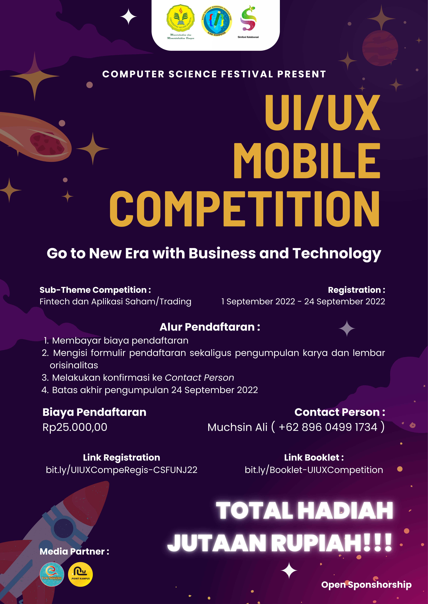

Competition
UI/UX MOBILE
Competition
Merupakan suatu kompetisi design tentang pembuatan suatu mockup uplikasi yang menerapkan prinsip UI/UX. UI/UX Mobile Competition dapat diikuti oleh Mahasiswa aktif baik itu D3/D4/S1, Setiap tim wajib beranggotakan 3-5 yang berasal dari institusi atau universitas yang sama

Business Model Canvas Competition
Merupakan suatu kompetisi design tetntang pembuatan suatu mockup uplikasi yang menerapkan prinsip UI/UX. UI/UX Mobile Competition dapat diikuti oleh Mahasiswa aktif baik itu D3/D4/S1, Setiap tim wajib beranggotakan 3-5 yang berasal dari institusi atau universitas yang sama